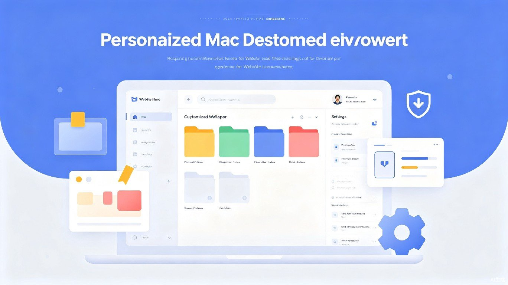

从开机设置到日常维护，打造专属于你的 Mac 使用体验

拿到新 Mac 后，正确的初始化设置和长期的使用规划能显著提升效率和体验。本指南面向个人用户，涵盖开机必做事项、文件管理策略、个性化设置、隐私安全配置以及日常维护清单，帮助你建立一套完整的 Mac 使用体系。
首次开机完成基础设置后，建议按以下顺序完成这些关键配置，它们是日后高效使用 Mac 的基石。
在「系统设置」顶部点击「登录」，使用你的 Apple ID 登录。这是使用 iCloud、App Store、Find My 等所有苹果服务的前提。如果你有 iPhone 或 iPad，使用同一 Apple ID 可实现无缝跨设备体验。
登录 Apple ID 后，在「系统设置 > Apple ID > iCloud」中选择需要同步的项目。建议至少开启「iCloud Drive」「照片」「通讯录」「日历」「备忘录」和「钥匙串」。这样你的核心数据会在所有设备间自动同步。
打开 Finder，按 Command + , 打开偏好设置。在「通用」标签中勾选你希望在侧边栏显示的项目；在「高级」中可设置显示文件扩展名、更改默认搜索范围。建议将「文稿」和「桌面」固定在侧边栏顶部。
右键点击 Dock 空白处选择「Dock 设置」。建议将 Dock 设为「自动显示和隐藏」以最大化屏幕空间，调整合适的大小，并取消勾选「显示最近使用的应用程序」以保持 Dock 整洁。将你最常用的应用拖拽到 Dock 左侧固定。
前往「系统设置 > 触控板」，建议开启「轻点来点按」（无需用力按下）、「双指辅助点按」（相当于右键）、三指拖移（在「辅助功能 > 鼠标与触控板 > 触控板选项」中开启）。鼠标用户可在「系统设置 > 鼠标」中调整跟踪速度和滚动方向。
在「系统设置 > 显示器」中选择合适的分辨率。对于外接显示器，可按住 Option 键点击「缩放」以显示更多分辨率选项。如果连接了多台显示器，在此调整排列方式和主显示器设置。
在「系统设置 > 显示器 > Night Shift」中设置自动开启时间，推荐选择「日落到日出」或自定义为晚上 22:00 到早上 7:00。Night Shift 可减少蓝光，缓解夜间用眼疲劳。
前往「系统设置 > Siri 与 Spotlight > Spotlight 隐私」，将不需要被索引的文件夹（如下载缓存、虚拟机目录）添加进去，可减少索引开销并保护隐私。同时可在「搜索结果」中取消勾选不常用的类别，让搜索更精准。
在「系统设置 > 通用 > 软件更新 > 自动更新」中，开启「检查更新」「下载可用更新」「安装 macOS 更新」和「安装应用程序更新」。让系统保持最新是安全和稳定的基础。
连接外接硬盘后，系统通常会提示是否将其设为 Time Machine 备份磁盘。前往「系统设置 > 通用 > Time Machine」，选择备份磁盘并开启自动备份。首次备份可能需要较长时间，建议在夜间进行。
在「文稿」目录下建立清晰的层级结构，推荐如下分类方式：
Finder 支持为文件和文件夹添加彩色标签，善用标签可以实现跨文件夹的快速筛选。推荐标签体系：
在「系统设置 > Apple ID > iCloud > iCloud Drive > 选项」中，你可以选择哪些应用的数据同步到 iCloud。建议将「文稿」和「桌面」开启同步，这样在任何设备上都能访问这些核心文件。对于大体积文件（如视频工程、虚拟机镜像），建议存放在本地非同步目录，避免占用 iCloud 空间和带宽。
为外接硬盘制定统一的命名和格式规范：
前往「系统设置 > 壁纸」，macOS 内置了多套动态壁纸，会根据时间自动切换光影效果。你也可以选择自己的照片，建议选用简洁、色调柔和的壁纸，减少视觉干扰。在「锁定屏幕」设置中，可以配置屏幕保护程序的启动时间和风格。
右键点击 Dock 空白处进行设置。小屏幕用户建议将 Dock 放在左侧或右侧，以充分利用纵向空间；大屏幕用户可放在底部。调整至合适的缩放比例，确保既能看清图标，又不会占用过多屏幕区域。
macOS 允许你拖拽调整菜单栏图标的顺序，按住 Command 键拖拽即可。对于不常用的图标，可以将其移除。在「系统设置 > 控制中心」中，可以自定义每个系统图标的显示方式（显示在菜单栏、隐藏或仅在控制中心显示）。
在「系统设置 > 声音」中选择合适的提示音，调整输出和输入设备的音量。在「系统设置 > 通知」中，按应用逐一配置通知权限：
FileVault 会对 Mac 的内置存储进行全盘加密，即使设备丢失，他人也无法读取你的数据。在「系统设置 > 隐私与安全性 > FileVault」中开启。首次加密可能需要数小时，期间可正常使用电脑。务必妥善保存恢复密钥，建议同时存储在 iCloud 和物理介质上。
前往「系统设置 > 网络 > 防火墙」，开启防火墙以阻止未经授权的入站连接。对于普通个人用户，默认设置即可。如果你运行了需要外部访问的服务（如本地开发服务器、远程桌面），可以在防火墙选项中为特定应用添加例外。
Gatekeeper 是 macOS 的安全机制，默认只允许运行来自 App Store 或已识别开发者的应用。建议保持此设置在「App Store 和已识别的开发者」选项。在「系统设置 > 隐私与安全性 > 安全性」中，你还可以查看被系统阻止的应用，并决定是否允许其运行。
在「系统设置 > 隐私与安全性 > 定位服务」中，你可以查看哪些应用访问了你的位置。建议仅对地图、天气、查找等真正需要定位的应用开启权限。对于不需要定位的应用，选择关闭以保护隐私并节省电量。
规律的维护能让 Mac 长期保持最佳状态。以下按频率整理的维护事项，建议加入你的日程提醒。
| 任务 | 操作方式 |
|---|---|
| 检查系统更新 | 「系统设置 > 通用 > 软件更新」 |
| 清空废纸篓 | 右键废纸篓 > 清倒废纸篓 |
| 整理下载文件夹 | 删除不再需要的下载文件，重要文件归档 |
| 重启 Mac | 苹果菜单 > 重新启动 |
| 检查存储空间 | 「系统设置 > 通用 > 存储空间」 |
| 任务 | 操作方式 |
|---|---|
| Time Machine 备份验证 | 确认备份正常进行，检查备份磁盘剩余空间 |
| 清理大文件和旧文件 | 使用「存储空间」中的「推荐」功能或第三方工具扫描 |
| 检查登录项 | 「系统设置 > 通用 > 登录项」，移除不必要的启动应用 |
| 更新应用程序 | App Store > 更新 或 各应用内检查更新 |
| 审查权限设置 | 「系统设置 > 隐私与安全性」逐项检查 |
| 任务 | 操作方式 |
|---|---|
| 全盘健康检查 | 使用「磁盘工具」检查磁盘错误 |
| 密码安全审计 | 检查密码管理器中的弱密码和重复密码 |
| 清理浏览器数据 | 清除缓存、Cookie 和历史记录中不需要的部分 |
| 归档旧项目 | 将已完成项目的文件移动到「存档」文件夹或外部存储 |
| 检查 Apple ID 安全 | 登录 appleid.apple.com 检查设备和信任列表 |
一个配置得当、维护规律的 Mac 可以陪伴你多年而始终保持高效。开机时完成的十项基础设置决定了使用体验的起点，而持续的文件管理规范、个性化调整、安全意识以及定期维护，则决定了长期使用的满意度。建议将本指南中的维护清单添加到提醒事项中，让好习惯成为自然。